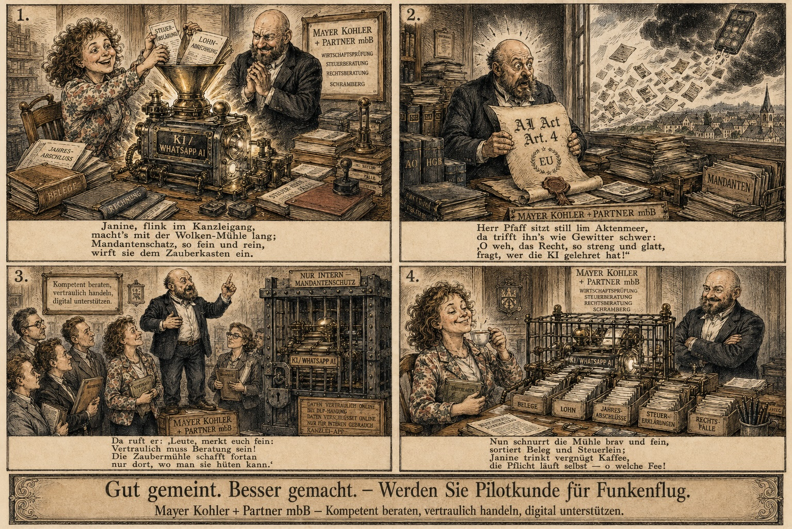

Funkenflug — die KI-Schulung, die niemand abhaken will.
Seit Februar 2025 muss jedes Unternehmen in der EU seine Mitarbeitenden im Umgang mit KI schulen. Standard-Videos in 40 Minuten durchklicken, Häkchen setzen, fertig? Verschenkte Zeit. Wir drehen die Pflicht um — und machen aus der lästigen Schulung den Funken, der Ihr Unternehmen für KI begeistert.

Beispiel — personalisiert für die Kanzlei Mayer Kohler + Partner mbB.
Ihre Schulung bekommt Ihre Figuren, Ihre Kultur, Ihre Werte.
Wir hätten Stockfotos nehmen können. Haben wir nicht. Wir haben den Comic-Stil von Wilhelm Busch gewählt — die Urform der deutschen Bildergeschichte, charmant, hintergründig, mit Augenzwinkern. Eine ganze Generation kennt sie nicht mehr; wir öffnen sie neu.
Dazu kommt die Steampunk-Ästhetik — Zahnräder, Kupferrohre, Zaubermühle: das visuelle Bild dafür, dass KI eine Maschine ist, die man bauen, bändigen und im eigenen Haus betreiben kann. Nicht eine Wolke, in die man Daten wirft. Das ist nicht Deko — das ist die Botschaft.
Die vier Panels oben sind ein Beispiel. Was Ihre Mitarbeitenden in der Schulung sehen, wird genauso unverwechselbar — und unverwechselbar Ihres.
Die ersten fünf Unternehmen formen Funkenflug von innen — sie bestimmen, welche Themen rein müssen, welche Beispiele zünden, welcher Ton stimmt. Danach sind diese Türen zu.
Pflicht oder Vorsprung — Sie entscheiden.
Noch sind Plätze frei. 30 Minuten Strategy Check, kostenfrei, unverbindlich.
Pilotkunden-Platz sichern →